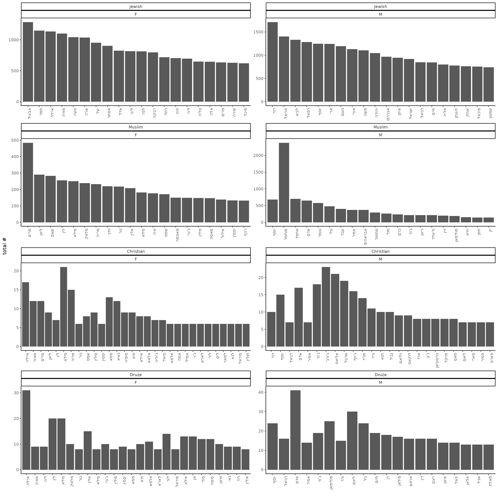
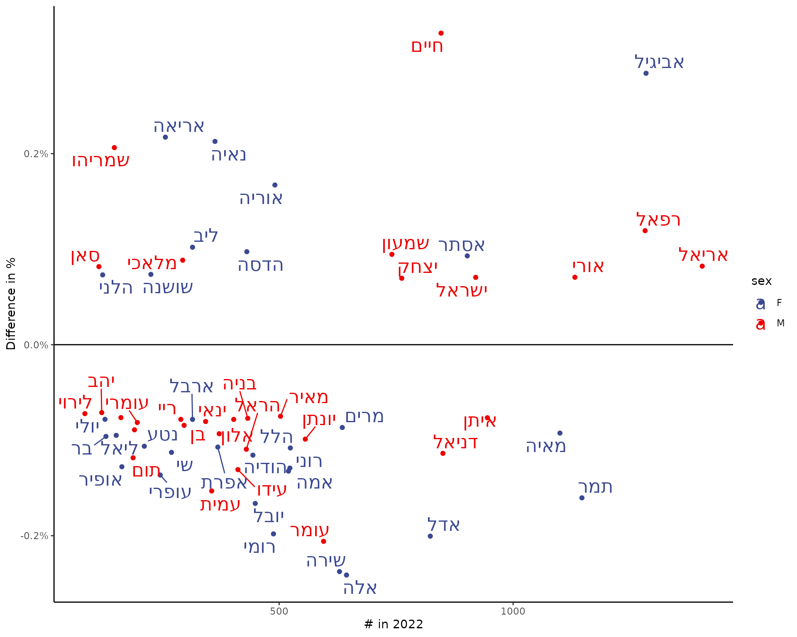
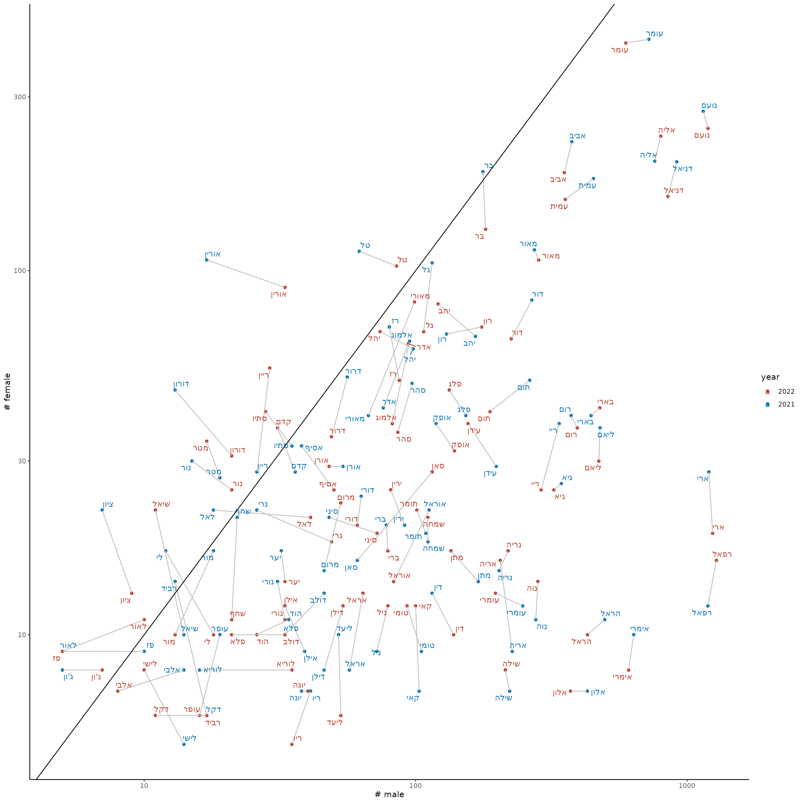
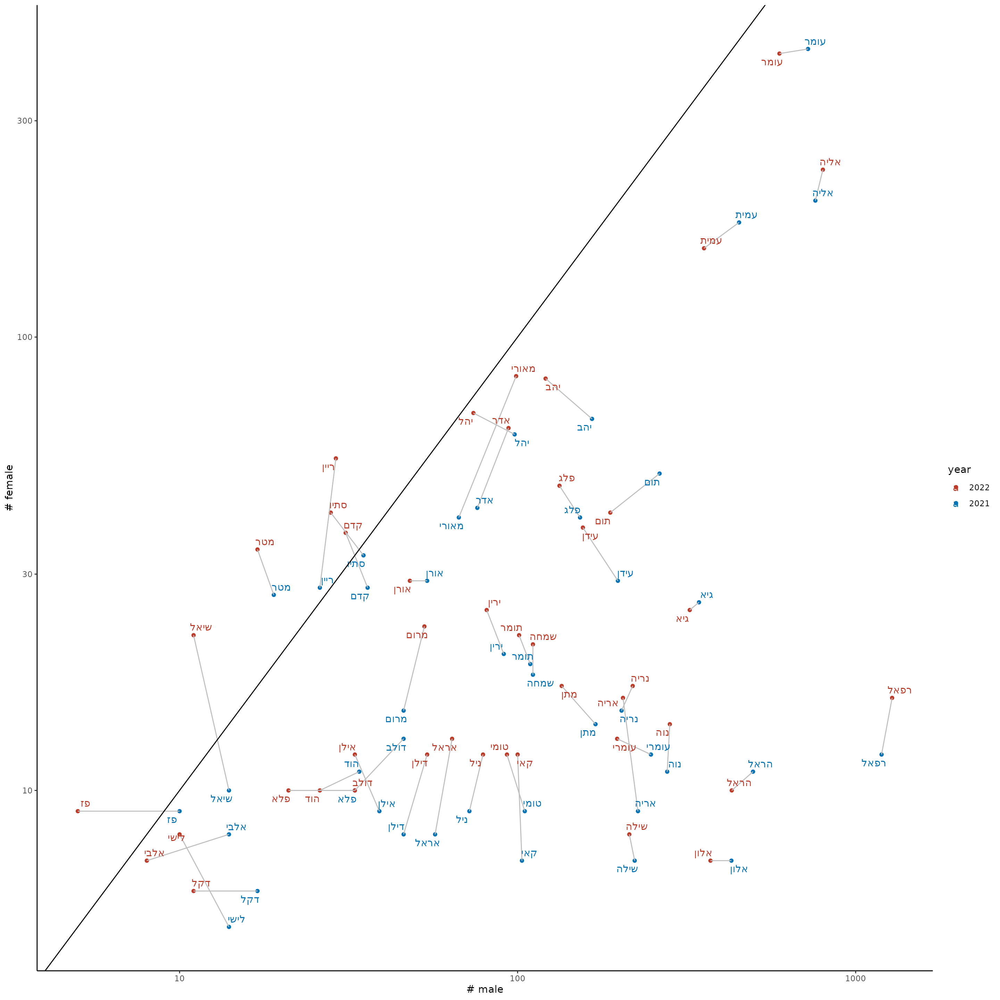
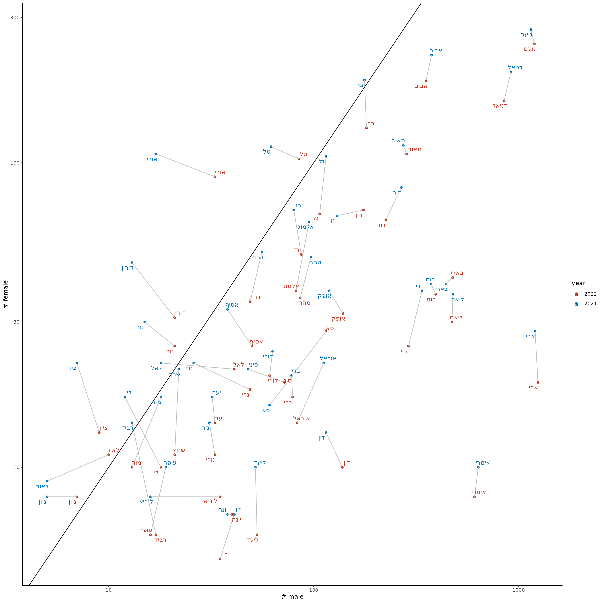

library(babynamesIL)
library(tidyverse)
#> ── Attaching core tidyverse packages ──────────────────────── tidyverse 2.0.0 ──
#> ✔ dplyr 1.1.4 ✔ readr 2.1.5
#> ✔ forcats 1.0.0 ✔ stringr 1.5.1
#> ✔ ggplot2 3.5.1 ✔ tibble 3.2.1
#> ✔ lubridate 1.9.3 ✔ tidyr 1.3.1
#> ✔ purrr 1.0.2
#> ── Conflicts ────────────────────────────────────────── tidyverse_conflicts() ──
#> ✖ dplyr::filter() masks stats::filter()
#> ✖ dplyr::lag() masks stats::lag()
#> ℹ Use the conflicted package (<http://conflicted.r-lib.org/>) to force all conflicts to become errors2022
Top 10 names
babynamesIL %>%
filter(year == 2022) %>%
mutate(sector = factor(sector, levels = c("Jewish", "Muslim", "Christian", "Druze", "Other"))) %>%
group_by(sector, sex) %>%
slice_max(order_by = n, n = 20) %>%
arrange(sector, sex, desc(n)) %>%
mutate(name = forcats::fct_inorder(name)) %>%
ggplot(aes(x = name, y = n)) +
geom_col() +
facet_wrap(sector ~ sex, scales = "free", ncol = 2) +
ylab("total #") +
xlab("") +
theme(axis.text.x = element_text(angle = 90, hjust = 1))
Names that changed the most in popularity
babynamesIL %>%
filter(year %in% c(2022, 2021), sector == "Jewish") %>%
pivot_wider(names_from = year, values_from = c(prop, n)) %>%
filter(!is.na(prop_2022) & !is.na(prop_2021)) %>%
mutate(prop_diff = prop_2022 - prop_2021) %>%
arrange(sex, desc(abs(prop_diff))) %>%
group_by(sex) %>%
slice(1:30) %>%
ggplot(aes(x = n_2022, y = prop_diff, color = sex, label = name)) +
geom_point() +
theme_classic() +
ggsci::scale_color_aaas() +
ggrepel::geom_text_repel(size = 6) +
scale_y_continuous(label = scales::percent) +
geom_hline(yintercept = 0) +
ylab("Difference in %") +
xlab("# in 2022")
#> Warning: ggrepel: 3 unlabeled data points (too many overlaps). Consider
#> increasing max.overlaps
Named that shifted from ‘male’ to ‘female’ and vice versa
unisex_data <- babynamesIL %>%
filter(sector == "Jewish", year %in% c(2021, 2022)) %>%
pivot_wider(names_from = "sex", values_from = c("n", "prop"), values_fill = 0) %>%
filter(n_M > 0 & n_F > 0) %>%
mutate(ratio = n_M / n_F) %>%
group_by(name) %>%
filter(abs(ratio[1] - ratio[2]) >= 0.2) %>%
ungroup()
unisex_data %>%
ggplot(aes(x = n_M, y = n_F, label = name, color = factor(year, levels = c(2022, 2021)), group = name)) +
geom_point() +
ggsci::scale_color_nejm(name = "year") +
geom_line(color = "gray") +
scale_x_log10() +
scale_y_log10() +
ggrepel::geom_text_repel() +
geom_abline() +
xlab("# male") +
ylab("# female")
Only names that became more male:
unisex_data %>%
group_by(name) %>%
filter(ratio[1] > ratio[2]) %>%
ggplot(aes(x = n_M, y = n_F, label = name, color = factor(year, levels = c(2022, 2021)), group = name)) +
geom_point() +
ggsci::scale_color_nejm(name = "year") +
geom_line(color = "gray") +
scale_x_log10() +
scale_y_log10() +
ggrepel::geom_text_repel() +
geom_abline() +
xlab("# male") +
ylab("# female")
Only names that became more female:
unisex_data %>%
group_by(name) %>%
filter(ratio[2] > ratio[1]) %>%
ggplot(aes(x = n_M, y = n_F, label = name, color = factor(year, levels = c(2022, 2021)), group = name)) +
geom_point() +
ggsci::scale_color_nejm(name = "year") +
geom_line(color = "gray") +
scale_x_log10() +
scale_y_log10() +
ggrepel::geom_text_repel() +
geom_abline() +
xlab("# male") +
ylab("# female")